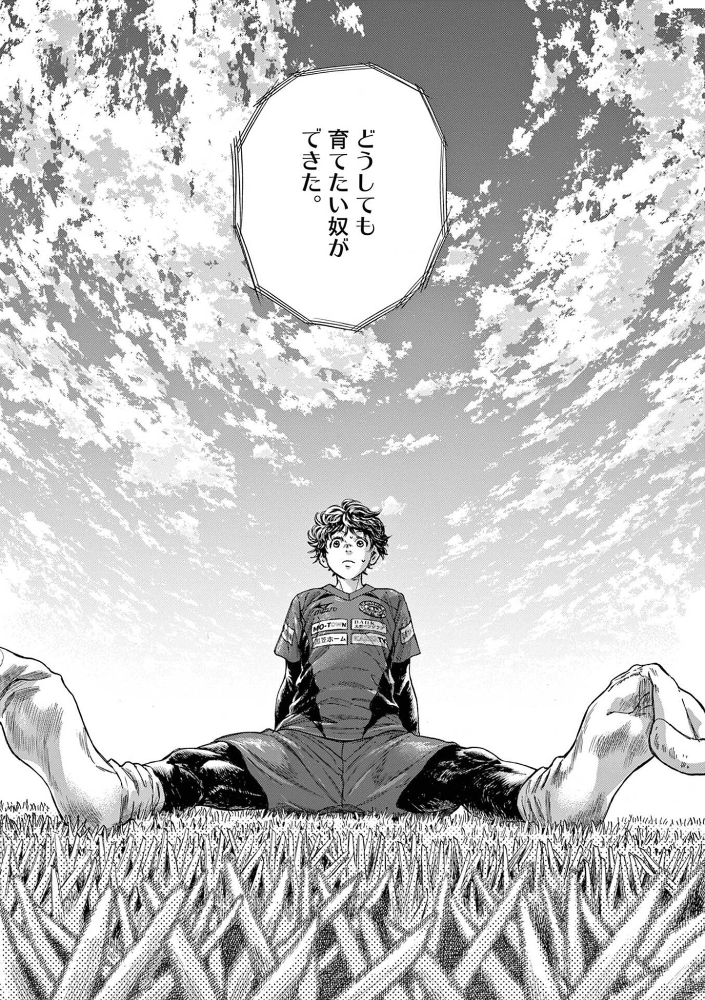
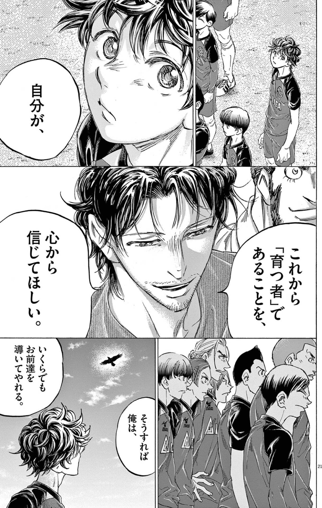
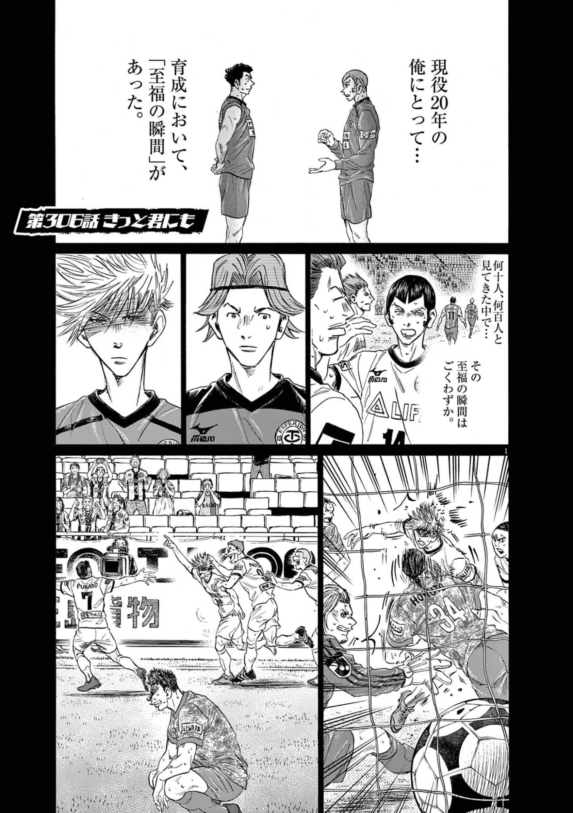
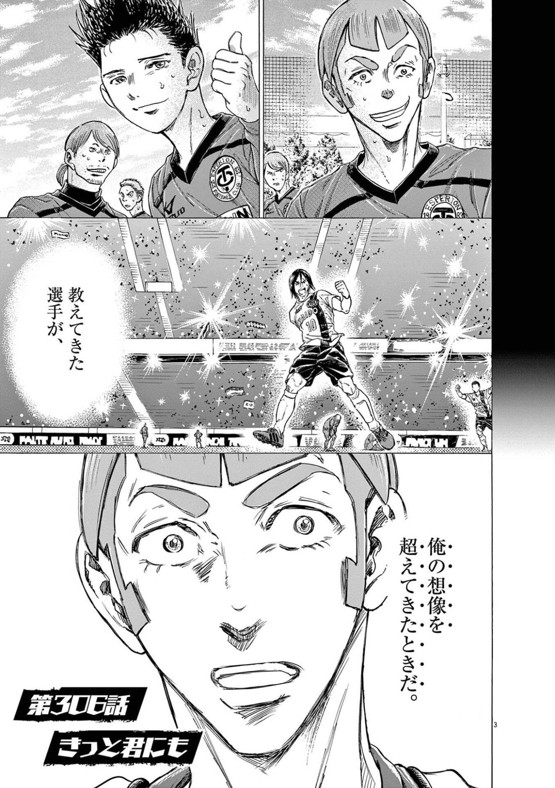
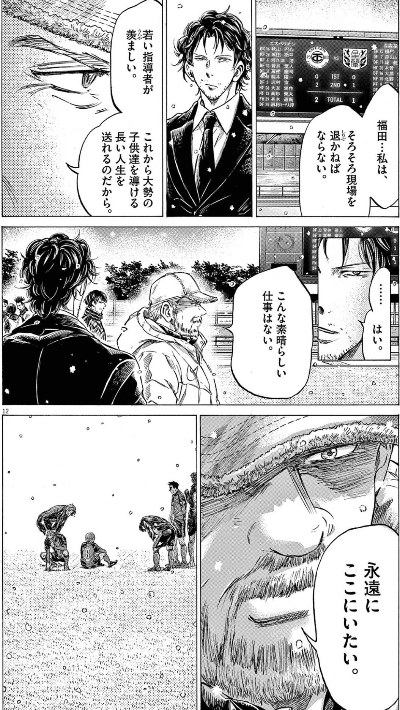

読書ログ #6 —— アオアシ × 利己的な遺伝子 × プロテスタンティズムの倫理と資本主義の精神
育てるとは、たぶん、自分の熱を誰かに複製して、いつか超えられることだ。
1. どうしても育てたい奴ができた
アオアシに、こんな独白がある。

「どうしても育てたい奴ができた」。
この一行が、僕はずっと忘れられない。誰かを育てたい、という衝動は、どこから来るのだろう。自分が点を取るのでも、自分が勝つのでもなく、他人が伸びるのを見たいという熱。一度すり減ったはずの熱が、ある一人に出会って、また灯る。
#5 では「見出す/見させる」を視た。今回はその先、見出した後、人を育てる側に回る話だ。二冊の本と並べたい。リチャード・ドーキンス『利己的な遺伝子』と、マックス・ウェーバー『プロテスタンティズムの倫理と資本主義の精神』。
2. 利己的な遺伝子：複製子という見方
ドーキンスの『利己的な遺伝子』は、生命を「遺伝子の乗り物」として捉え直した本だ。
主役は、個体ではない。自己複製子——コピーされ、広がろうとするもの——だ。遺伝子は、生き残るために、体という乗り物を作る。生き物は、遺伝子が自分を複製するための手段だ、と。
そして、この本のいちばん射程が長いのは、最後に出てくる一語だ。ミーム(meme)。遺伝子が生物の複製子なら、文化にも複製子がある。メロディ、言い回し、型、思想、所作、熱。それらは人から人へコピーされ、頭から頭へ広がっていく。
育てる、という営みを、この目で視てみたい。育成とは、自分のなかにあるミーム——サッカー観、所作、熱——を、別の人間に複製することだ。
3. 育てるとは、ミームを継承すること
アオアシの指導者たちは、技術だけを教えているわけではない。
福田が選手に伝えているのは、もっと深いところにある何かだ。「お前達は育つ者だ」と信じること。視ること。考えること。その姿勢ごと、選手にコピーしようとしている。

「いくらでもお前達を導いてやれる」。この言葉には、技術以上のものが乗っている。自分が信じている世界の視え方を、丸ごと渡そうとする意志だ。これは、ミームの継承そのものだ。
そして、ここで #5 の福田を思い出したい。彼は、言語化を徹底して求めながら、言語化できない勘も守る人だった。育成とは、言葉にできるミーム(型・理論)と、言葉にできないミーム(勘・熱)の、両方を渡すことなのだと思う。
4. 至福の瞬間：複製が、原型を超えるとき
育てる側には、ある「至福の瞬間」があるらしい。

それは、教えてきた選手が、自分の想像を超えてきたときだ。

ここに、不思議な逆説がある。普通、何かを渡したら、渡した側が上のはずだ。なのに育成では、渡したミームが、複製先で原型を超えていくことが、いちばんの喜びになる。自分が追い越されることが、至福になる。
ドーキンスの目で視ると、これは自然だ。複製子にとっての成功とは、原型が威張りつづけることではない。複製先で増殖し、原型より遠くまで広がることだ。教え子が自分を超えるとき、ミームは初めて、自分という一個の身体を離れて、自走を始める。
育てる熱の正体は、たぶんこれだ。自分が勝つことではなく、自分の熱が、自分を超えて続いていくのを視たい。
5. プロ倫：組織に、人生を捧げる
もう一冊、ウェーバーの『プロテスタンティズムの倫理と資本主義の精神』を重ねる。
ウェーバーは、西欧でなぜ「働きつづけること」が倫理になったかを問うた。鍵は Beruf(ベルーフ)——天職、あるいは召命。職業労働を、神から与えられた使命として、全身で打ち込む。それが信仰の証になる、という倫理だ。
アオアシには、この召命に近い愛が、何度も出てくる。

「永遠にここにいたい」。これは、引退間近の、老いた指導者の言葉だ。キャリアの最終盤。自分はもう退いていくのに、この現場だけは手放したくない。若い指導者たちが、これから多くの子を育てていく——その場所に、それでもなお、居たい。ただの愛社精神ではない。一生を育成に捧げた人間の、最後の祈りに近い。
育成は、即効性がない。自分が生きているうちに、報われないかもしれない。それでも一生をかけて続けられるのは、Beruf——「これが自分のやることだ」という、説明のいらない確信があるからだ。そして、老いた指導者の「永遠にここにいたい」は、その召命を生ききった先にある、静かな祈りなのだと思う。
6. 鉄の檻に気をつける
ただ、ウェーバーは怖い予言も残している。鉄の檻(Iron Cage) だ。
召命から始まった勤勉も、時代が進むと、最初の信仰や目的が抜け落ちる。残るのは、回りつづける増殖システムだけ。なぜ働くのか分からないまま、働きつづける。手段が、目的になってしまう。
育成にも、同じ罠がある。「人を育てる」が、いつのまにか「育成のためのKPI」に変わる。組織への献身が、「組織のための組織」に変わる。熱を継ぐはずの場所が、熱を測る場所に堕ちる。召命が、檻になる。
これを解くのは、たぶん #5 で視た福田の姿勢だ。言語化(可読化)を大事にしながら、言語化できないもの(熱・勘)も守る。型は継ぐが、型のための型にはしない。檻の鍵は、たぶん、いつも「何のために育てるのか」を問いなおせるかどうかにある。
7. 横に複製される、信頼
ミームは、上から下へ(指導者から選手へ)だけ複製されるのではない。横にも広がる。
継承された熱や型は、選手同士のあいだでも移っていく。一人の所作が、隣へうつり、やがてチームの「当たり前」になる。誰が起点だったかも分からなくなったころ、それはもう文化と呼ばれている。
良い組織のミームは、こうやって横に複製されていく。一人の熱が、チームの所作になり、空気になる。信頼が、いちいち言葉や確認を要らなくする——見て確認しなくても、そこにボールが出てくると信じられる、あの感覚。育てる熱は、最終的に、特定の個人を離れて、場そのものに宿っていく。
8. 観測と、育てる熱
最後に、OrbitLens に繋げたい。
育てる熱は、数値にいちばん出にくいものだ。メンタリング、信頼、場づくり、誰かの再起を待つこと——どれも、その四半期のスコアには載らない。EIS の言葉でいえば、これはダークマターだ。見えないのに、文明をつないでいる質量。
「どうしても育てたい奴ができた」という、熱の再点火。「想像を超えてきた」という、至福の瞬間。どちらも、観測の網からこぼれる。可読化できないミームの継承だ。
だから、観測する側に問われるのは、こうだと思う。育てる熱を、測れないからといって、無いことにしないこと。そして、育成を「育成のためのKPI」にして、鉄の檻を作らないこと。EIS が Anchor や Cleaner、保守や継承を重要な軸として残そうとするのは、ここに近い。継ぐ者の熱を、序列の外で、せめて観ようとすること。
育てるとは、自分の熱を誰かに複製して、いつか超えられること。そしてその熱は、数えられなくても、文明をつないでいる。
自分が超えられることを、喜べるか。たぶんそれが、育てる側に回るということだ。
取り上げた本
次回予告
次回 #7 も、アオアシ。舞台はスペインへ移る。なぜ、育つ環境はこんなにも違うのか——強さは才能ではなく、環境と蓄積の産物なのかもしれない。ジャレド・ダイアモンド『銃・病原菌・鉄』と、ふたたびブルデュー『ディスタンクシオン』と並べて読む。
本記事は小林有吾『アオアシ』、リチャード・ドーキンス『利己的な遺伝子』、およびマックス・ウェーバー『プロテスタンティズムの倫理と資本主義の精神』への個人的な考察です。
OrbitLens / machuz